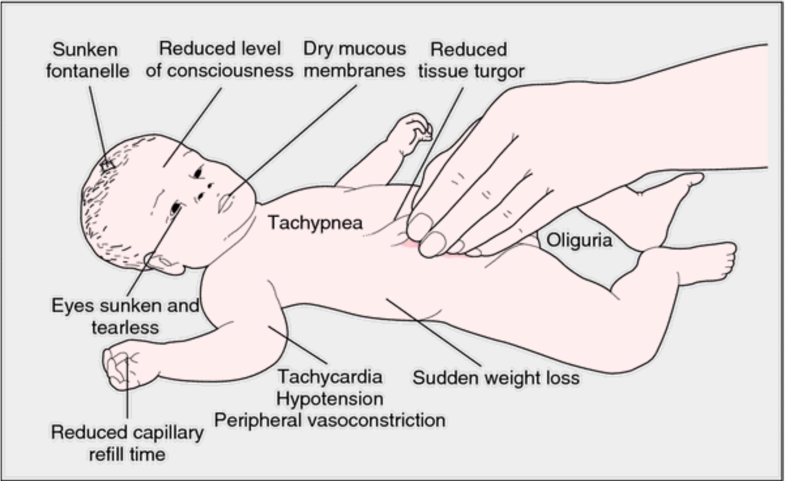

Digestive dysfunctions
CLEFT LIP AND CLEFT PALATE
- Cleft lip and cleft palate are considered the most common congenital cranio-facial malformations within medical practice.
- They can occur individually or together.
- Cleft lip occurs with or without cleft palate in about 1 in 1000 births. Cleft lip is more common in males than females.
- Cleft palate, on the other hand, tends to occur alone in approximately 1 in 2500 births and occurs mostly in females.
- Cleft lip occurs when the mouth cavity fuses partially or incompletely. Normal fusion occurs between the fifth and eighth intrauterine weeks. The cleft palate, on the other hand, fuses about a month later in normal circumstances.
- The abnormalities appear to run in families, and therefore, to be influenced by heredity in about twenty per cent of the cases. Some cases have shown a higher incidence with monozygotic twins than in a dizygotic twins
- Other associated pre-disposing factors are maternal age (too young or above 35 years),
- maternal diabetes mellitus, and
- excessive alcohol intake during pregnancy,
- drugs used in the treatment of cancers and the use of accutane (a drug used in some places in the treatment of acne).
Diagnostic investigations
- Cleft lip can easily be diagnosed just by observation, but care should be taken to determine whether it is simply confined to the lip or if it is more extensive. Cleft palate can rarely be confirmed by observation but by fingers into the mouth and palpate for any incomplete fusions in the roof of the infant's mouth.
- Occasionally, an x-ray may be ordered to visualize the affected area better.
- The major problem associated with cleft palates is the inability to suckle and swallow.
- Other complications or problems, which the baby will encounter, include improper drainage of the middle ear, which causes poor functioning of the eustachian tubes.
- This can lead to increased pressure in the middle ear, leading to ear infections. This increases the incidence of conductive hearing impairment.
- Upper respiratory infections are also a long-term problem for these children.
- Speech development may be affected as the baby grows, unless surgical intervention has been undertaken.
Management of cleft lip (harelip)
- The baby and mother are admitted into a room in isolation to prevent alimentary and respiratory infections, which may follow surgery.
- Plastic surgery is usually performed under general anaesthesia when the infant is about three months old, provided it is thriving and weight gain has been satisfactory.
- Initial repair may be revised at four or five years of age.
- As soon as the baby recovers from anaesthesia, glucose drinks in small amounts are commenced followed by breast milk using a spoon or pipette four hourly.
- The child is nursed on lateral sides to prevent regurgitation and aspiration occurring.
- The wound is kept clean by frequent swabbing with hydrogen peroxide.
- The sutures are removed 5-7 days post operatively. The arms may have to be splinted most of the time to prevent the baby from rubbing on the lips.
Management of cleft palate
- The palate can be surgically corrected by operation called palatoplasty, usually deferred until the child is about twelve months old.
- During that period, attempts must be made to prevent infections and maintain the child's good nutritional status.
- The cleft lip repair must heal before this second stage of surgery is undertaken.
Pre-operative care
- The child and the mother are admitted one week before the day of the operation.
- Any infection must be contained before surgery. You should take blood samples from the child to test for haemoglobin, grouping and cross matching.
- Night splinting of the arms should be practiced so that the child may get used to the procedure in preparation for post-operative care.
- The child should not be allowed to consume any food for 6 hours before being sent to theatre but may be put on intravenous dextrose 5% during that period.
- Pre-medications should be administered as ordered by the doctor.
- Ask the parents to sign a consent form, as the operation is usually performed under general anaesthesia.
- You will need to reassure the parents from time to time as they may be extremely anxious.
Post- operative care following cleft lip and cleft palate repair
- After cleft repair an infant usually accumulates mucus in the nose and mouth. These should be sucked out to clear the airway.
- A laryngoscope, endotracheal tube and suction machine should always be kept within reach in case of need.
- The air in the environment should be humidified.
- Mild sedatives should be prescribed and given as necessary.
- The child's arms should be restrained in splints to prevent him/ her from rubbing the operated area, but he/she should be periodically released (every two hours).
- The parents should be involved in the child's care to provide some comfort. Feeding should be continued frequently as ordered. Additionally, continue to monitor for signs of bleeding.
- Observations of temperature, pulse and respiration are done 1-2 hourly to detect onset of infections.
- A clinical follow up is necessary to monitor the child's speech. Speech therapy may be necessary if difficulties exist.
Oesophageal fistula
- This is an abnormal opening of the oesophageal wall.
- In some cases the fistula and atresia may occur together, involving the trachea.
- Fistulae tend to occur more often in low birth weight babies.
- A history of polyhdramnious (an excessive amount of amniotic fluid) during pregnancy is often a predeterminant.
- The commonest abnormalities met with in medical practice are a tracheo -oesophageal fistula without associated atresia of the oesophagus and a tracheooesophageal fistula with associated oesophageal atresia.
Clinical features
- Gastric reflux into the trachea will occur, causing inhalation of secretions and hydrochloric acid, resulting into ulceration of the mucous membrane.
- The baby will persistently cough and choke due to aspiration of gastric content.
- This may lead to the development of pneumonia.
- Cyanosis is present and respiration disturbed.
- Management of the condition necessitates surgical repair.
management
Pre-operative care
- The infant should be nursed in the incubator, kept warm and given highly humidified oxygen to relieve respiratory distress and liquefy secretion.
- The infant's head should be slightly elevated and intermitted suction carried out both to the mouth, pharynx and proximal oesophageal pouch.
- The catheter may have to be changed daily by the doctor or irrigated with the normal saline.
- At intervals the infant's head may be lowered to facilitate free drainage of secretion.
- You should continue to take and record the vital signs and monitor respiration to analyse the effectiveness of these procedures.
- Antibiotics are administered prophylactically.
Surgical management
- As soon as the diagnosis confirms the presence of fistula, a gastrostomy should be performed to decompress the stomach and also serves as a way of feeding after surgery.
- The gastrostomy tube may be left open to permit the escape of air from the stomach.
- The fistulae are then repaired. Attempts should be made to prevent the gastric content entering the lungs.
- This is achieved by modifying the infant's position.
Post-operative care
- Any respiratory difficulties or distress should be reported immediately to the attending physician.
- The gastrostomy tube should be allowed to drain freely by gravity until the second or third post-operative day.
- It can be used to feed the infant, beginning first with glucose and then graduating to a milk formula.
- As the condition improves, oral feeds should be introduced at which point the gastrostomy tube may finally be removed.
- The nurse should ascertain that the baby can swallow without any problem.
- Once the gastrostomy tube has been removed and the baby is feeding well orally, his discharge may be planned.
Clinical follow up
- In three to six weeks post-operatively an oesophagoscopy should be performed to inspect the status of the anastomosis.
- Oesophageal dilatation may have to be performed if a stricture is suspect.
- Advise the parents to monitor the child's progress, especially where difficulties with feeding and swallowing are noted. The child must be returned to hospital immediately without delay.
Congenital pyloric stenosis
- This is an obstruction at the pyloric sphincter caused by hypertrophy of the circular muscle fibres in the pylorus, resulting in gastric stasis and dilatation.
- The condition occurs soon after birth for unknown reasons.
- Pyloric stenosis is a common surgical condition of the gastro-intestinal tract occurring in approximately 1 in 150 male infants and 1 in 750 female infants (this denotes a ratio of 1 male to 5 female infants).
- It also tends to occur more frequently in the first-born children and in some families more than the others.
- The child is usually normal until three to four weeks old.
pathophysiology
- In pyloric stenosis, there is a diffuse hypertrophy and hyperplasia of the smooth muscle of the gastric antrum and sphincter, which becomes twice its normal size and is almost cartilaginous in its consistence.
- This pathological change increases the size of the pyloric circulation muscle, which in turn, results in the narrowing of its orifice.
- This narrowing can be partial or absolute which leads to obstruction.
- The gastric contents cannot, therefore, flow freely through the constricted or blocked pylorus.
- Vigorous peristalsis results in hypertrophy and dilatation of the stomach muscle.
Clinical features
As a result of pathological changes occurring, the infant usually presents with the following:
- Persistent vomiting which gradually increases in severity until it becomes projectile;
- The infant becomes dehydrated and develops hypochlorhydric alkalosis (blood becomes more alkaline than usual because of diminished level of hydrochloric acid);
- Gastritis with some bleeding from the gastric mucosa may also occur;
- Loss of weight and constipation may follow;
- On physical examination, visible peristaltic movement of the stomach is noticeable over the abdominal wall;
- On abdominal palpation a lump can be felt indicating thickened pylorus.
investigations
- Any investigations should begin with history taking with reference to immediate projectile vomiting which follows feeds.
- Undertake a physical examination of the child.
- A radiological study, which may include barium meal, may also be required.
- Blood tests should be carried out to determine serum chloride concentration as well as the ph, sodium and potassium level.
- Haemotocrit and haemoglobin level estimations, which are normally high because of haemo-concentration, should also be tested for.
management
- If the operative measures are delayed for one reason or another, the baby should be managed in the interim.
- Due to persistent vomiting, the feeds should be reduced radically.
- Gastric lavage should be performed at regular intervals using normal saline.
- An intravenous infusion of 5% dextrose normal saline should be put up and monitored.
- You should also maintain a fluid balance chart.
- Monitor the child's electrolyte balance monitored and any deficiencies identified should be replaced accordingly.
- Muscle relaxant (antispasmodic) drugs, for example, atropine methonitrate (eumydrin) $0.6 \%$ alcohol solution, administered by a dropper or pipette direct on the tongue at the back of the mouth, may be prescribed to be given fifteen to twenty minutes prior to each feed.
Surgical management
The only curative treatment is surgical intervention, known as pyloromyotomy (rammstedt's operation), which should be undertaken as soon as possible, in order to relieve the obstruction.
- The procedure is performed under general anaesthesia or local anaesthesia and involves making an incision through the hypertrophied circular muscle without severing the mucous membrane, which then bulges between the longitudinally split muscle thus widening the passage.
Pre op care
- isolate in a cubical, keep warm and the reverse barrier nursing method employed.
- Regularly take and record vital signs. The temperature should be taken rectally;
- Monitor the amount and characteristics of the vomitus and stool;
- Observe for signs of hunger such as the infant sucking the fingers or fist as well as for signs of hyperperistalsis;
- Collect specimens for laboratory analysis as requested by the surgeon;
- Assist with other diagnostic procedures as required;
- Withhold oral feeds, administer and monitor parenteral fluids as prescribed;
Pre op.....
- Perform gastric lavage with normal saline if ordered. In cases where naso-gastric tube is passed and left in situ, the nurse must ensure it is intact and aspiration is performed regularly, recording the content on the fluid balance chart;
- If feeding is ordered pre-operatively, the infant's head should be lifted up a bit to prevent regurgitation.
- Intravenous infusion of 5% dextrose alternating with normal saline, if ordered, must be given and monitored with a lot of care to prevent overloading the child's circulation;
- Maintain a strict intake/output chart.
- The addictive electrolytes such as oral potassium should be administered correctly according to the dosages prescribed.
Post op....
- On return from the operating theatre, the care given before the child went in for surgery must be continued.
- More attention should be paid to the provision of adequate fluid and nutritional intake.
- Intravenous fluids are sustained until the infant is able to take oral glucose, electrolyte solution or breast milk or formula milk. This is usually approximately six hours post-operatively, especially when no further vomiting occurs.
- The infant's head should be slightly elevated after feeding and he should be placed on right lateral position.
- His response to feeds must be recorded.
Post op....
- You should observe for signs of complications, paying special attention to pulse, skin colour and abdominal distension.
- Before the baby is discharged to go home, the parents should be taught and encouraged to get involved in positioning, feeding, observing for vomiting and inflammation around the operation site. When the time comes for discharge, the parents should be informed about where to go for follow up and review procedure.
- Feeding the baby after surgery varies from one hospital to another and from one surgeon to another. The principles, however, remain the same
IMPERFORATE ANUS
- This is one of the most common congenital defects in this region among the newborn.
- It is usually due to failure of the anal membrane to rupture.
- The imperforate anus can either be superficial (minor) or deep (severe).
- The imperforate anus encompasses several forms of malformation without an obvious anal opening, and may have a fistula from the distal rectum to the perineum or the genitourinary system.
- Whenever it occurs, no meconium is passed and the infant usually develops abdominal distension and vomiting at a very early stage.
- More serious abnormalities are the absence of anal canal and rectum.
- This type of abnormalities is noted in 1 in every 5000 live births.
- Alternatively, fistula may develop in the vagina in girls, urethra in boys and urinary bladder in both.
- The minor case of these abnormalities occurs in 1 in every 500 live births.
Diagnostic evaluation
- Checking for patency of the anus and rectum is a routine part of the newborn assessment and includes observation regarding the passage of meconium.
- Inspection of the perineal area reveals absence of a normal anus.
- Digital and endoscopic examination identifies constriction or the blind pouch of rectal atresia.
- Stenosis may not become apparent until 1 year of age or older when the child has a history of difficult defecation, abdominal distension and ribbon-like stools.
- A rectourinary fistula is suspected on the basis of meconium in the urine and confirmed by radiographs of contrast media injected through a tiny catheter into the fistulas. Abdominal ultrasound may be performed to evaluate the infant's anatomic malformation
management
- These cases must be treated surgically as a matter of urgency.
- In all cases, the infant is taken off food after the parent has signed the consent form.
- The infant is put on intravenous drip of 5% dextrose alternating with normal saline before being taken to the operating theatre.
- The operation is usually performed under general anaesthesia.
- The operation for minor cases involves the incision of the anal membrane or the perforation of the membrane using a blunt instrument.
- This is followed by periodical anal dilation to prevent scar formation.
- When the imperforate anus is more severe, that is, situated 1.5 cm or over between the anus and blind end of the colon above, a colostomy is undertaken. Further intestinal repair and closure is planned about six to twelve months later.
- Post-operatively, the intravenous infusion is continued for a few more days, vital sign observations taken and recorded frequently and antibiotics in addition to analgesics are prescribed.
- You must constantly observe and report regularly the bowel action and the size of the infant's abdomen for any distension.
MEGACOLON (HIRSCHSPRUNG DISEASE)
- This is a congenital condition in which a portion of the large intestine is grossly dilated.
- In addition, it is a congenital anomaly that results in mechanical obstruction from inadequate motility of part of the intestine.
- It was named after dr. Harald hirschsprung, a danish surgeon.
- The cause of hirschsprung's disease is unknown but occurs more commonly in male infants than in the females, with a ratio of 4 to 1 .
- It has been noted that one third of all intestinal obstructions are due to megacolon.
- In some cases, it is found in children who have down's syndrome (chromosomal abnormality) and those with congenital urological abnormalities. It tends to be hereditary.
pathophysiology
- In congenital megacolon, there is an absence of autonomic parasympathetic ganglion cells in the sub-mucous layer and muscular coat of the large intestine, especially around the sigmoid-rectal area.
- As a result of this, there is failure of peristaltic function, leading to accumulation of gas and faeces in the proximal portion of the intestine.
- This leads to the occurrence of obstructions and the abdomen becomes distended.
Clinical features
- The newborn may present with signs of acute intestinal obstruction having failed to pass meconium.
- The abdomen is distended within a day or so after birth.
- In older children, there may be constipation, which in some cases alternates with diarrhoea.
- Toxaemia and dehydration soon result.
- The infant may die within hours or days, if the problem is not rectified.
- If the baby lives longer, he may have anaemia and proteinaemia caused by malabsorption of nutrients.
Diagnostic investigation
- Diagnostic investigation begins with the compilation of an accurate personal history.
- This is then followed by a physical examination whereby on rectal examination, the rectum is empty of faeces, the internal sphincter is tight and leakage of liquid stool and accumulated gas may occur if the affected segment is short.
- Occasionally, barium enema may be used to confirm the diagnosis.
management
- The baby should be managed according to the severity of his condition, which may be mild, moderate or severe.
- The symptoms exhibited will be the guiding factor.
- It may be necessary to improve the child's general health since he might be severely malnourished and dehydrated.
- Usually surgical intervention is the only remedy.
- The operation is called recto-sigmoidectomy with temporary colostomy, which may be closed after several months postoperatively depending on the patient's recovery progress.
- If the child's general condition is poor, it may be necessary to delay operation to enable the medical team to improve the patient's general health.
- In this case, a temporary colostomy must be done first. You should constantly reassure and support the parents during this trying time.
Pre and post operative care
- You should prepare and nurse the child as for any other patient who has undergone abdominal surgery including colostomy.
DIARRHOEAL DISEASES
- This is one of the main paediatric emergencies you may have to deal with.
- In young children, passage of three or more watery stools, with or without blood, in twenty-four hours is referred to as diarrhoea, which is also known as gastro-enteritis.
- The latter technically means inflammation of the stomach and small intestine.
- There are two types of diarrhoea:
- acute diarrhoea mostly caused by infectious agents such as viral, bacterial and parasitic pathogens; and
- chronic diarrhoea caused by chronic conditions such as malabsorption syndromes, inflammatory bowel disease, immune disease, food allergy, lactose intolerance and chronic non-specific diarrhoea or a result of inadequate management of acute infectious diarrhoea.
- Diarrhoea in children, especially in developing countries, is still one of the causes of unnecessary deaths
- Diarrhoea is a very common disease, but cases can be quite easily reduced in simple ways, such as improving nutrition in young children and general standards of hygiene within the community.
- Additionally, providing adequate hydration early in diseases associated with the symptom is necessary. Lack of hydration is the main cause of death in young children if no urgent action is undertaken.
Predisposing factors to childhood diarrhoea
The general health of the child is often a pre-disposing factor. Infants or children who lead a healthy life are less likely to develop diarrhoea than those who are ill and malnourished.
- The younger the child, the more likely he/she is to have diarrhoea.
- Environmental factors should also be taken into consideration.
- The socio-economic status tends to contribute to incidences of diarrhoea in situations where certain facilities such as, good sanitation, pure water supply, hygienic food storage, and similar domestic requirements are inadequate.
PATHOPHYSIOLOGY
Abnormal loss of fluids and electrolytes from the intestines may occur as a result of gastrointestinal disturbance and this leads to diarrhoea. There are three main reasons for this loss.
- The first of these is increased fluid secretion from the intestine.
- Some microorganisms such as vibro-cholerae and e.coli produce toxins, which stimulate salt and water secretion from the absorptive villi cells of the intestine. The bacteria stick to the surface of villi cells without penetrating or destroying the cells.
- This secretory diarrhoea is very strong and accounts for the severe rise in watery stools and rapid dehydration that is seen in cholera and coli form diarrhoea in infants and children
- The intestinal walls are still able to absorb foods and water when the child is given orally.
- The second factor is poor absorption (malabsorption).
- Depending on the child's age about two to eight litres of fluid enter the intestine in twenty-four hours.
- Only 50-200 mls of this fluid is absorbed or reabsorbed into the blood stream.
- The remainder is passed in the faeces. The stimulation or irritation of the intestine results in rapid passage of the bowel contents.
- This rapidity results in lack of intestinal enzymes to split sugar, which in turn passes to the large intestine. Here it draws water from the surrounding tissues causing diarrhoea.
- The third factor is exudation from the intestine.
- Some pathogenic micro-organisms such as salmonella typhi normally cause diarrhoea by penetrating the intestinal mucosa, destroying the cells and sometimes gaining access to the bloodstream.
- Here the mucosa becomes inflamed and exudation (leakage) of fluids containing serum, pus cells, and blood occurs. In some very serious cases, the ulcers bleed heavily and may perforate causing peritonitis as in typhoid fever.
CAUSES
Enteral infections
- This group encompasses several micro-organisms and parasites gaining access to the intestinal tract. Some of these are non-pathogenic and are usually present within that tract but may change with circumstances to cause diarrhoea. Some of the organisms and intestinal parasites in this category include escherichia coli (e.coli), schistosoma, crystosporidium associated with hiv, entamoeba histolytica, salmonella, vibrio cholerae, shigella.rotavirus and other types of viruses.
Parenteral infections
- Any fever in children, and infections which are unconnected to the gastro-intestinal tract, can cause diarrhoea or diarrhoea and vomiting. The diseases which fall under the category of parenteral infections include urinary tract infection, pneumonia, otitis media, tonsillitis, malaria and measles.
Associated with
- Diarrhoea may be associated with upper respiratory tract infections, urinary tract infections and otitis media.
Dietary causes
- These include overfeeding, introduction of new foods, reinstituting milk too soon after diarrhoeal episode, osmotic sugar from excess sugar in formula, excessive ingestion of sorbitol or fructose
Medications
- Such as antibiotics and laxatives may also result in diarrhoea
Toxic causes
- Resulting from ingestion of heavy metals such as lead and mercury and organic phosphates
Functional causes
Especially irritable bowel syndrome
Other factors
Here the cause may be known or unknown.
- psychological factors, for example, a child who is fearful, anxious and lives under a tense environment may develop diarrhoea due to increased gastro-intestinal activities.
- Acute abdominal problems such as intussusception may result in diarrhoea and/or bloodstained stool.
- The ingestion of poisonous substances, which include traditional herbal medicine, administered in the community, may also be contributing factors.
- Some children have diarrhoea of unknown origin. Physical and laboratory investigations do not reveal the cause though in treatment, attempts are made to control it just like any other form.
- Gastro-enteritis is associated with feeding defects and vitamin a deficiency.
- Dehydration can be mild, moderate or severe and the management will depend on the degree.
Clinical features
- History of diarrhoea and vomiting with recent weight loss.
- Dry mouth, lips, tongue, eyes and skin
- Thirst
- Sunken eyes and depression of fontanelle
- Loss of skin elasticity (turgor). Lift up a skinfold over the abdomen or neck and see whether it sinks back slowly. (note that loss of skin elasticity also occurs in marasmus.)
- Restlessness, apathy (loss of interest in surroundings), coma
- Low urine output
- Rapid acidotic respiration
- Rapid weak pulse
SIGNS AND SYMPTOMS OF DEHYDRATION
management
The major goals in the management of acute diarrhoea include
- assessment of the fluid and electrolyte imbalance,
- rehydration,
- maintenance fluid therapy and
- reintroduction of adequate diet
- Any parenteral and enteral infections are effectively treated with appropriate antibiotics or drug preparation, whether these infections are either suspected or confirmed.
- The child should be kept warm,
- vital signs of temperature, pulse and respiration are monitored for positive improvement or deterioration of the child's condition.
- The parents should be constantly reassured.
- An accurate fluid balance chart should be maintained.
- Pay particular attention to the child's urinary output.
- The child's personal hygiene must be maintained
PREVENTION
Health education is the most important approach to prevention of diarrhoeal diseases in any community
These are some of the issues, which should be included when giving health education on diarrhoeal diseases.
- All mothers should be encouraged to breast feed their babies for several months even after introducing them to other meals. As children grow, proper weaning procedures should be introduced to the mother, so that she is aware when and how it should be done.
- More emphasis should be placed on the importance of hand washing before and after meals and also after visiting the toilet
- To minimize further infections, feeding utensils should be clean and food handled in the most hygienic manner.
- Parents should avoid using bottles as a means of feeding children. Instead they should use cups and spoons.
- Similarly, fly-breeding environments should be eradicated by proper disposal of refuse.
- make use of latrine facilities.
- All drinking water should be collected from a safe source and should be boiled.
- Nutritional improvement should be considered for all, with a special emphasis on growing children. Children should be taken to health facilities for a comprehensive vaccination programme.
- Early treatment of diarrhoea should be enforced in all health facilities.
- giving of plenty of oral fluids when diarrhoea occurs, when mothers bring their children for clinic follow up, and in hospital wards before discharge.